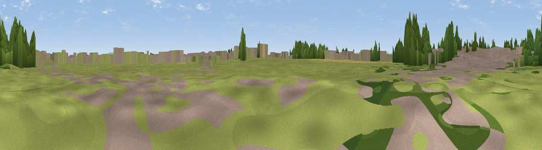

Viewing Area
#39085 in England · top 91% of its area beats it · near LeemingThe view, rendered

A 360° render of this exact spot computed from the terrain model, tree cover and land cover — summer colours, afternoon light, calibrated against photographs of famous viewpoints. Real trees, hedges and buildings will differ in detail.
The panorama
Grey silhouette: terrain skyline in each direction (720 bearings, Earth curvature and refraction included). Dashed green: skyline with trees (+15 m) and buildings (+8 m) as obstacles. Blue strip: how far the ground is visible on each bearing.
Where the view opens
Wedge length = distance to the farthest visible ground on that bearing (vegetation-aware). Rings at 10, 25 and 50 km.
What fills the view
60% grassland · 14% built-up · 14% cropland · 11% woodland
Angular shares of the visible panorama (visual magnitude), not map area. Landscape diversity 0.48 (0–1 Shannon).
Key numbers
More beautiful places nearby
The staircase of upgrades: each row has a higher view potential than everything closer. Driving times are estimates from straight-line distance, calibrated against real road routing — check an actual route before setting out.
| Place | Direction | Drive | Score |
|---|---|---|---|
| Viewpoint near Thornton Watlass | WSW · 6 km | ~12 min | 51.1 |
| Wood Hill | SW · 9 km | ~17 min | 63.5 |
| Viewpoint near Brompton | NE · 12 km | ~22 min | 65.7 |
| Viewpoint near Hunton | WNW · 13 km | ~24 min | 69.8 |
| Bonfire Hill [Landmoth Hill] | ENE · 13 km | ~24 min | 74.7 |
| Viewpoint near Kirby Knowle | E · 16 km | ~28 min | 80.5 |
| Beacon Hill | ENE · 20 km | ~33 min | 84.7 |
| Carlton Bank | ENE · 26 km | ~42 min | 85.1 |
54.29599, -1.54661 · source: osm viewpoint · position refined by local search. Computed location — check access rights before visiting.